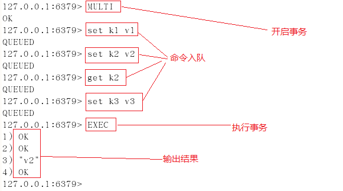
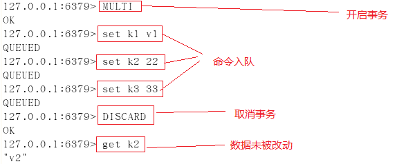
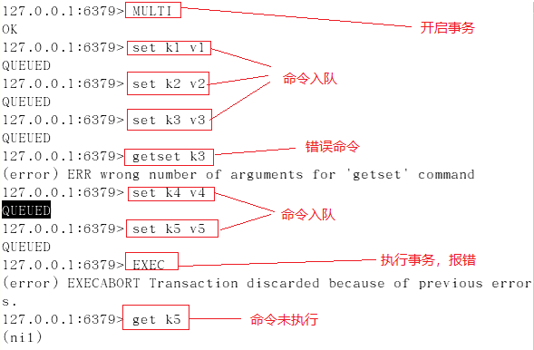
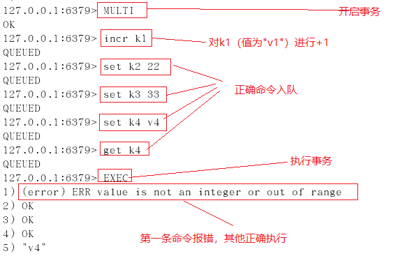
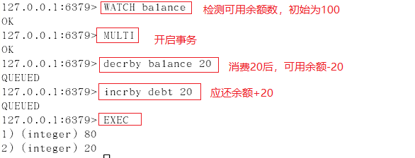
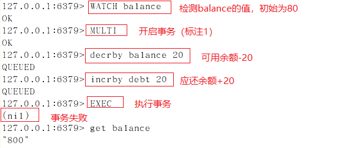
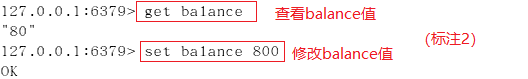

Redis-事务
推荐看这篇: Redis 设计与实现
Redis事务的概念
Redis 事务的本质是一组命令的集合。事务支持一次执行多个命令，一个事务中所有命令都会被序列化。在事务执行过程，会按照顺序串行化执行队列中的命令，其他客户端提交的命令请求不会插入到事务执行命令序列中。
总结说：redis事务就是一次性、顺序性、排他性的执行一个队列中的一系列命令
Redis事务没有隔离级别的概念
批量操作在发送 EXEC 命令前被放入队列缓存，并不会被实际执行，也就不存在事务内的查询要看到事务里的更新，事务外查询不能看到。
Redis事务不保证原子性
Redis中，单条命令是原子性执行的，但事务不保证原子性，且没有回滚。事务中任意命令执行失败，其余的命令仍会被执行
Redis事务的三个阶段
- 开始事务
- 命令入队
- 执行事务
Redis事务相关命令
- watch key1 key2 … : 监视一或多个key,如果在事务执行之前，被监视的key被其他命令改动，则事务被打断 （ 类似乐观锁 ）
- multi : 标记一个事务块的开始（ queued ）
- exec : 执行所有事务块的命令 （ 一旦执行exec后，之前加的监控锁都会被取消掉 ）
- discard : 取消事务，放弃事务块中的所有命令
- unwatch : 取消watch对所有key的监控
Redis事务使用案例
正常执行

放弃事务

若在事务队列中存在命令性错误（类似于java编译性错误），则执行EXEC命令时，所有命令都不会执行

若在事务队列中存在语法性错误（类似于java的1/0的运行时异常），则执行EXEC命令时，其他正确命令会被执行，错误命令抛出异常

使用watch
案例一：使用watch检测balance，事务期间balance数据未变动，事务执行成功

案例二：使用watch检测balance，在开启事务后（标注1处），在新窗口执行标注2中的操作，更改balance的值，模拟其他客户端在事务执行期间更改watch监控的数据，然后再执行标注1后命令，执行EXEC后，事务未成功执行。


一但执行 EXEC 开启事务的执行后，无论事务使用执行成功， WATCH 对变量的监控都将被取消。
故当事务执行失败后，需重新执行WATCH命令对变量进行监控，并开启新的事务进行操作。
总结
watch指令类似于乐观锁，在事务提交时，如果watch监控的多个KEY中任何KEY的值已经被其他客户端更改，则使用EXEC执行事务时，事务队列将不会被执行，同时返回Nullmulti-bulk应答以通知调用者事务执行失败
为什么Redis不支持回滚
Redis命令在事务中可能会执行失败，但是Redis事务不会回滚，而是继续会执行余下的命令。如果您有一个关系型数据库的知识，这对您来说可能会感到奇怪，因为关系型数据在这种情况下都是会回滚的。
Redis这样做，主要是因为:
- 只有当发生语法错误(这个问题在命令队列时无法检测到)了，Redis命令才会执行失败, 或对keys赋予了一个类型错误的数据：这意味着这些都是程序性错误，这类错误在开发的过程中就能够发现并解决掉，几乎不会出现在生产环境。
- 由于不需要回滚，这使得Redis内部更加简单，而且运行速度更快
Redis 事务在 SpringBoot 中的应用
我们在 SpringBoot 中使用 Redis 时，会引入如下的 redis starter
首先，看一看当前测试用例的主体代码：
|
|
错误的用法
执行以上测试用例，会抛出如下的异常信息：
这里给出的错误信息显示：在执行 EXEC 命令之前，没有执行 MULTI 命令。这很奇怪，我们明明在测试方法的第一句就执行了 MULTI。通过追踪 multi、exec 等方法，我们可以看到如下的执行源码（spring-data-redis）：
源码中已经给出了答案：由于 enableTransactionSupport 属性的默认值是 false，导致了每一个 RedisConnection 都是重新获取的。所以，我们刚刚执行的 MULTI 和 EXEC 这两个命令不在同一个 Connection 中。
解决上述示例的问题，最简单的办法就是让 RedisTemplate 开启事务支持，即设置 enableTransactionSupport 为 true 就可以了。测试代码如下：
更常见的写法仍是采用 RedisTemplate 的默认配置，即不开启事务支持。但是，我们可以通过使用 SessionCallback，该接口保证其内部所有操作都是在同一个Session中。测试代码如下：
总结：我们在 SpringBoot 中操作 Redis 时，使用 RedisTemplate 的默认配置已经能够满足大部分的场景了。如果要执行事务操作，使用 SessionCallback 是比较好，也是比较常用的选择
ref:
https://www.cnblogs.com/DeepInThought/p/10720132.html
https://baijiahao.baidu.com/s?id=1613631210471699441&wfr=spider&for=pc
http://www.imooc.com/article/28131